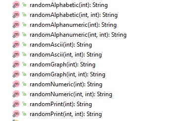

一文详解编程中的随机数
随机数，相信大家都不陌生，网上有很多生成随机数的小工具。直观来看，随机数就是一串杂乱无章的数字、字母、符合组合, 比如pSTkKIiZMOlDxOgwpIQGdlZwrJCRiHRK。但随机数真的就随机吗？真的就无法预测吗？什么场景下可以用什么方式来生成随机数呢? 这篇文章将为大家介绍随机数的类型，在程序中如何使用随机数，以及随机数在密码学中使用场景。希望能尽量地将在开发过程中需要用到的随机数知识都收纳在这里，方便大家进行查阅！
随机数的类型
在知乎上看到过一个说法，认为这个世界没有真正意义上的随机，比如扔骰子。如果能算对扔出时的转速、方向，并测出空气中的阻力，桌面的阻尼系数，骰子的质量 等等因素，那么就有机会算出骰子落地时的点数。我猜想赌神大概率也是基于这种原理吧。物理科学上是有“真正”意义的随机的，那就是量子力学的不可测原理。它是由德国著名物理学家海森堡在1927年发表的论文《论量子理论运动学与力学的物理内涵》中提出来的。不是特别理解其中的内容，但是从字面上简单的理解，就是对于微观粒子，它的速度和位置不能准确测量，当对其中一个物理量测量得越准确时，另一个物理量就越模糊。
从编程角度看，我们的随机数生成器分为两种大类型，一种是真随机数生成器，一种是伪随机数生成器。
真随机数生成器 TRNG - True Random Number Generator
前面说了实际上基本没有真正意义随机，那程序和算法本身就更加不能产生真随机，但是我们可以想办法迂回地产生统计意义上的真随机。比如Linux内核的随机数发生器： Linux维持一个熵池，不断地收集非确定性的事件，比如时钟，鼠标的移动，键盘的敲击， IO的响应时间，磁盘的速度，wifi的强弱，内存的变化等等，然后基于一定的算法给出一个数。
伪随机数生成器 PRNG - Pseudo Random Number Genrator
如果需要快速生成大量的随机数，那么真随机数生成器可能由于收集不到那么多的随机事件而产生阻塞行为。在不需要那么高安全级别的随机数需求下，我们可以采用伪随机数生成器来生成随机数。伪随机数生成器一般是基于一个给定的初始值，也就是种子 - seed，用一定的算法来算出一个数。且算法内部维持一个内部状态，每次生成一个新的随机数，这个值都会跟着变化，这样就能产生不一样的随机数来。常见的伪随机数生成器的算法有：
- 线性同余法 - Linear Congruential Generator (简称LCG)
- 马特赛特旋转演算法 - Mersenne Twister.
Java中的Random() 用的就是线性同余法。线性同余方法是目前应用广泛的伪随机数生成算法，其基本思想是通过对前一个数进行线性运算并取模从而得到下一个数，递归公式为：

其中A，B，M是产生器所用到的常量
随机数的使用
真随机数
我们可以通过下面这个命令得到操作系统内核提供的外部熵随机数生成器：
λ head -c 32 /dev/random | openssl enc -base64
zLvAZ2vfFTUQ+ENPLdbG2F8B3wv86LM9X2s3DeymN28=
这个命令将会从Linux内核的熵池中读取一个32位的随机数，并用64进制展示出来。我们也可以选择用数字的形式展示出来：
λ cat /dev/random| tr -dc '0-9' | fold -w 10| head -n 4
0231488700
4599846604
7629411051
4199097655
上面这个命令从熵池中4个10位的随机数，并用0-9展示出来。
但用这个命令的时候要小心，由于熵池中的值通过记录系统的随机事件得来的，那么就有可能有用完的时候，那么这时这个命令就会阻塞在这里，直到有系统随机事件进到熵池中才会继续。这样对程序来说不是很友好，于是操作系统的随机数生成器一般都提供另外一个工具，在熵池的随机事件用完之后，能用伪随机算法产生一个随机数给你：
λ cat /dev/urandom| tr -dc 'a-zA-Z0-9' | fold -w 10| head -n 4
EK0Z3g49By
csziDZeWtO
EhHu30IcM4
PyDyY47Ah5
Golang的内置随机数生成器rand就是基于 /dec/urandom来实现的。
开发中常见的随机数生成器
这里我们以Java语言为例，介绍一下常见的随机数生成器的用法。
- Random()
首先一起来看一下这个最常见的Random. Random实现了基于线性同余法的伪随机数生成器，其构造函数接收作为种子的参数seed，如果不给定seed，则默认采用当前时间戳作为种子。 下面的函数可以生成指定位数的随机字母串：
public static String ALPHA = "abcdefghijkllmnopqrstuvwxyzABCDEFGHIJKLMNOPQRSTUVWXYZ";
public static String generate_alphaString_using_Random(int length) {
Random random = new Random();
StringBuffer buffer = new StringBuffer();
int bound = ALPHA.length();
for(int i=0; i< length; i++){
buffer.append(ALPHA.charAt(random.nextInt(bound)));
}
return buffer.toString();
}
- RandomStringUtil
如果大家只是偶尔需要用到随机字符串，不要什么特别的随机字符集的话，那么可以用Apache Common提供的RandomStringUtil辅助类，可以方便地生成常见的随机字符串：
public static String generate_alphaString_using_RandomUtils(int length){
return RandomStringUtils.randomAlphabetic(length);
}
作为Apache Common的良心包，一般都会有一系列的实现方法可供选择，比如：

- Math.random()
如果要生成的是随机数，那么也可以使用Math类的random方法来实现。
java
System.out.println("\n--- using Math.random ---");
for (int i = 0; i < 20; i++) {
System.out.println(Math.random() * 100);
}
这里提一下，Math.random()的实现其实是调用了Random.nextDouble()的，使用它本质上是Random的一个包装
随机数生成的并发性能问题
前面我们提到Random随机数生成器里面维护着一个内部状态，每次随机数的生成这个内部状态都需要跟着改变，这样才能生成不同的随机数。我们跟一下源码就可以发现Random的seed是一个AtomicLong型，当计算下一个随机数的时候，会用到CompareAndSwap (CAS) 操作，如果切换失败的话，那么就重新计算下一个随机数：
private final AtomicLong seed;
protected int next(int bits) {
long oldseed, nextseed;
AtomicLong seed = this.seed;
do {
oldseed = seed.get();
nextseed = (oldseed * multiplier + addend) & mask;
} while (!seed.compareAndSet(oldseed, nextseed));
return (int)(nextseed >>> (48 - bits));
}
当并发有很多个线程都在获取下一个种子的时候，那么性能就会降下来，因为有很多failed-retry的。
有坑就填坑！ 既然有并发问题，那么我们就来ThreadLocal吧。Java内置了一个ThreadLocalRandom类，这个类继承了Random, 但是每一个线程都有一个ThreadLocal的seed，这样当并发计算next()的时候，CAS操作就不会有太多冲突了。ThreadLocalRandom的用法也是很简单的， 跟Random基本一致：
public static String ALPHA = "abcdefghijkllmnopqrstuvwxyzABCDEFGHIJKLMNOPQRSTUVWXYZ";
public static String generate_alphaString_using_ThreadLocalRandom(int length) {
Random random = ThreadLocalRandom.current();
StringBuffer buffer = new StringBuffer();
int bound = ALPHA.length();
for(int i=0; i< length; i++){
buffer.append(ALPHA.charAt(random.nextInt(bound)));
}
return buffer.toString();
}
Random真的随机吗？
我们来看下面这个用法：
public static void sameSeed_generate_sameResult(long seed){
Random random1 = new Random(seed);
Random random2 = new Random(seed);
System.out.println(String.format("random1: %d, random2: %d", random1.nextInt(100), random2.nextInt(100)));
}
public static void main(String[] args) {
System.out.println("\n--- sameSeed_generate_sameResult ---");
sameSeed_generate_sameResult(3000);
}
你种子相同的Random生成的随机数是一样的：
--- sameSeed_generate_sameResult ---
random1: 17, random2: 17
这也可以理解，初始值seed一样，算法一样，那么生成的结果也会是一样的。 这种情况对于大多数需要随机数的场景来说，也是可以接受的。但是对于安全要求比较高的场景，比如密码学中，这样就容易被人攻击猜到随机数，比如Java的Random()，默认的种子是当前时间戳， 同余算法是公开的nextseed = (oldseed * multiplier + addend) & mask;，算法中的A,B,M这三个常量也是固定的
private static final long multiplier = 0x5DEECE66DL;
private static final long addend = 0xBL;
private static final long mask = (1L << 48) - 1;
那么就有可能通过穷举一段时间内的所有seed，来求得随机数。
还是那句话，有坑填坑！
Java在security这个包里面提供了一个SecureRandom的类，以操作系统随机数生成器生成seed，再用Hash算法SHA1计算出摘要值作为最终结果。这样以操作系统随机数生成器生成seed 加上 一动有蝴蝶效应的 hash算法，计算出来的随机数更加能以被猜测出来。
public static String generate_alphaString_using_SecureRandom(int length)
throws NoSuchAlgorithmException {
// Random random =new SecureRandom(); // default is SHA1PRNG
Random random =SecureRandom.getInstance("SHA1PRNG");
StringBuffer buffer = new StringBuffer();
int bound = ALPHA.length();
for(int i=0; i< length; i++){
buffer.append(ALPHA.charAt(random.nextInt(bound)));
}
return buffer.toString();
}
用SecureRandom的注意事项
前面我们说到真随机数的生成有两个方式，一个是/dev/random, 一个是/dev/urandom，不同的是/dev/random是阻塞的。而SHA1PRNG 会根据JRE里面的配置选择/dec/random 还是/dev/urandom，如果里面配置的是securerandom.source=file:/dev/random, 那么当操作系统的熵池用完之后，你的程序在求随机数的时候会被阻塞住，直到有随机事件到来。据说Tomcat里面就是使用SecuredRandom.getInstance('SHA1PRNG') 的，使用有时初始化很慢很慢。具体的解决方案就是， 打开$JAVA_PATH/jre/lib/security/java.security , 确保里面的securerandom.source配置为file:/dev/random .
随机数的应用场景
随机数的应用场景有很多，尤其是在密码学应用中，基本上大部分的密码学算法实际应用中都用到了随机数。下面列举一些常见的使用场景：
- UUID: UUID v4 里面是由 6个固定位 + 122个随机数来组成的
- 密码学算法应用中用到的随机数
- 密钥：对称加密算法，公开密钥算法，Message Authentication Code算法都会用到密钥，而大部分情况下，密钥就是随机数
- IV: 块密码加密中CBC迭代模式会用随机数作为IV，这样可以使得相同的明文加密出来的密文都不同，提高密码猜测的难度
- nonce: 块密码算法的CTR模式后用到nonce
- salt: 基于口令的加密算法会用到，很多Hash算法也会用到随机数作为盐
以上内容介绍了随机数的类型，随机数的使用，重点是在Java里面是怎么用的，以及多线程开发下的性能，密码学随机数生成，最后介绍了随机数在密码学中的使用场景。